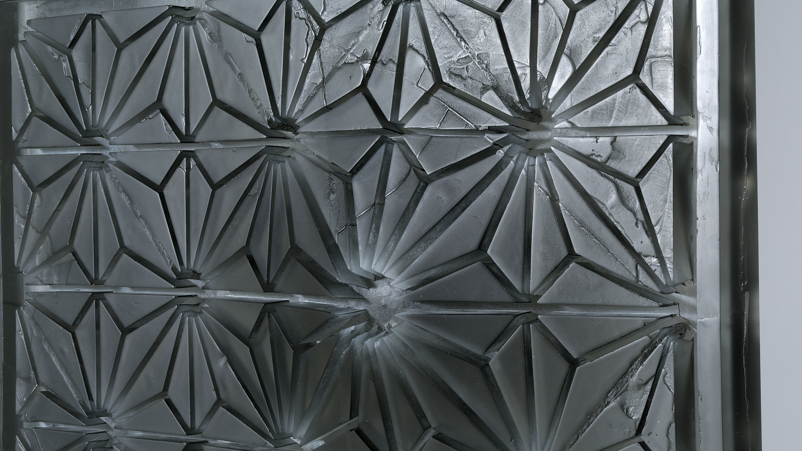
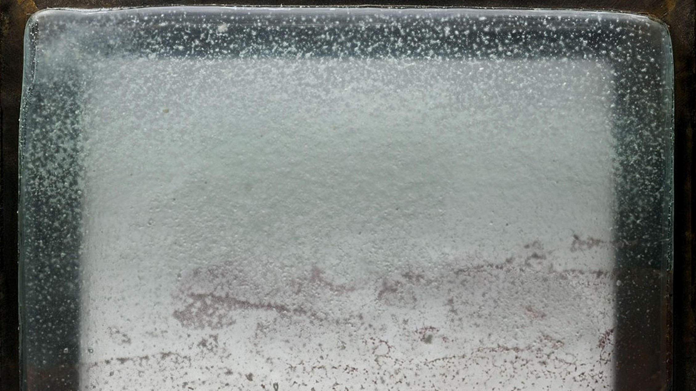
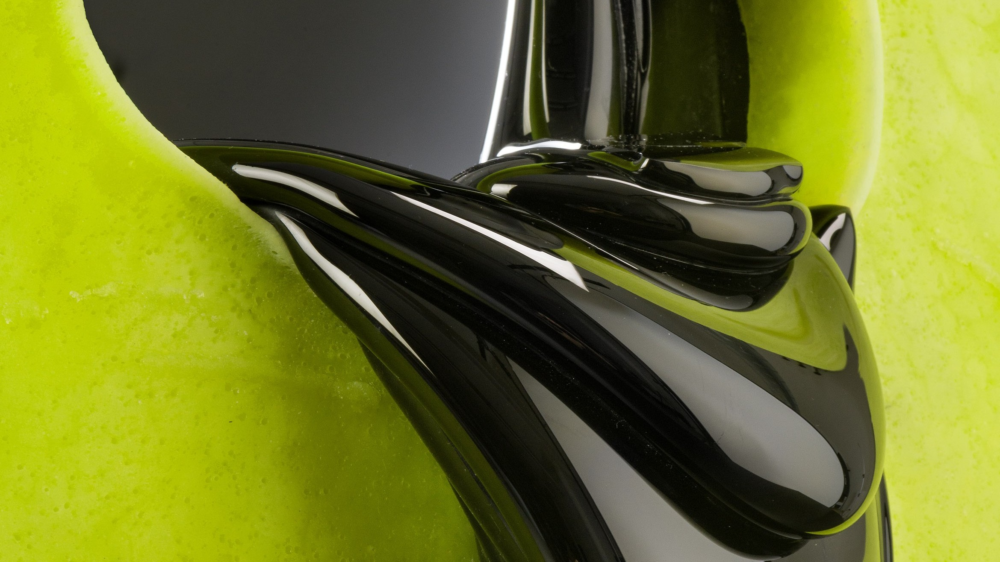
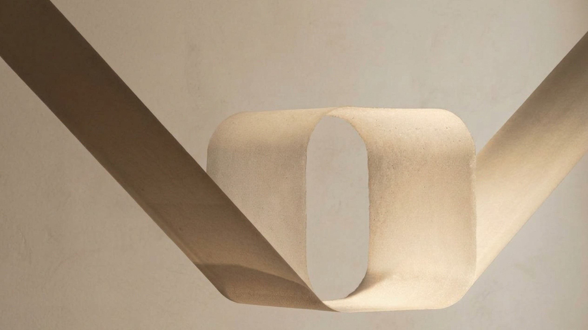

Znění
Výstava Znění představí aktuální díla tří výrazných českých sklářů (skláře a sklářek) Václava Řezáče, Lady Semecké a Josefíny Váchové. Jedná se o umělecké prostorové instalace, objekty a obrazy. Některé z nich vznikají přímo na míru galerii. Jsou vytvořeny především ze skla, zabývají se jeho vlastnostmi a pokouší jeho možnosti, experimentují s technologiemi a propojují sklářské řemeslo s výrazovými prostředky vizuálního umění. Název výstavy pak dokazuje k procesu vnímání a porozumění vystavených děl i vztahu mezi nimi vzájemně. nová dosud nevystavená díla a díla která vznikla pro konkrétní prostor – především u dominikánů.
Václava s Ladou spojují studia na UMPRUM v ateliéru Vladimíra Kopeckého a působení na TIGA Urban Glass Institute, Toyama v Japonsku. Ladu s Josefínou rezidenční pobyt pro začínající umělce na Pilchuck Glass School. Všichni tři se sešli na Katedře designu TF Technické univerzity v Liberci. Lada s Václavem v roli pedagogů. Josefína byla jejich studentkou.
Václav Řezáč (* 1977) je absolventem sklářské školy v Železném Brodě a ateliéru prof. Vladimíra Kopeckého na pražské UMPURM. Deset let působil jako manager studia tavené plastiky Zdeňka Lhotského a souběžně se věnoval vlastní volné a designérské tvorbě. Volil tehdy zejména hutnické tvarování žhavé hmoty, zálibu našel v tabulovém skle. V současné době pracuje jako pedagog v ateliéru Skla a Šperku na Katedře designu Technické univerzity v Liberci.
Lada Semecká (*1973) patří k předním jménům českého sklářského umění. V letech 1994 až 2000 studovala v ateliéru Sklo pod vedením Vladimíra Kopeckého na pražské UMPRUM a během těchto let taktéž absolvovala studijní stáže v Rize a St. Peterburgu. V roce 2006 byla oceněna na Coburger Glaspreis, Barbara Kopellstaetter Award for Young Artist a v roce 2022 získala cenu za Mimořádný počin – Grand Prix v rámci designérského veletrhu Designblok. Od roku 2017 vede ateliér Prostorová tvorba na Fakultě umění a designu v Ústí nad Labem, působí také na Katedře designu TF TUL v Liberci. V roce 2022 s keramikem Petrem Ladou založili studio LAD.
Josefína Váchová (* 1998) je absolventka SUPŠS Železný Brod a oboru Design skla a šperku na TF TUL v Liberci. Zatímco na střední škole se zaměřovala na malbu na sklo, na vysoké škole se její tvorba rozvinula směrem ke konceptuálnímu umění a designu. Vynikla svou bakalářskou prací, která propojila vědecký výzkum s uměleckou tvorbou. V roce 2023 získala ocenění Master of Crystal. Loni obhájila svou diplomovou práci o prostorové instalaci ze skla a papíru za kterou získala prestižní Cenu Stanislava Libenského. Experimentování s materiály je pro ni klíčové, stejně jako neustálé překonávání vlastních hranic.




Sounding
DOPLNIT
DOPLNIT